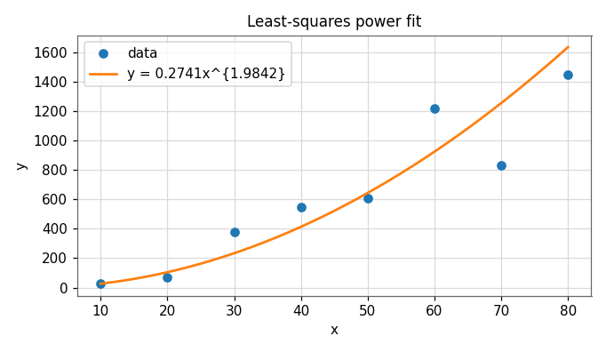
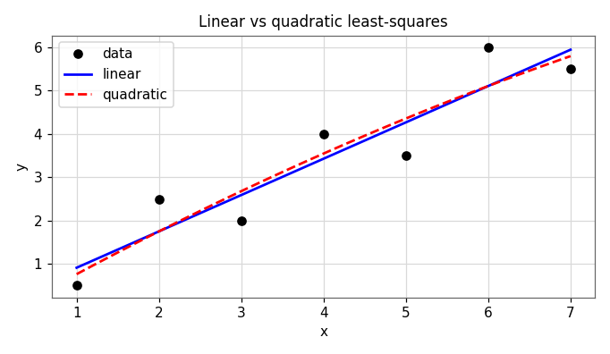

Least-Squares Curve Fitting
Apply least-squares solutions to data. We fit a straight line that minimizes the squared error, measure how good the fit is, then extend the idea to exponential, power, and polynomial models.
Curve fitting vs. interpolation
Curve fitting constructs a function that captures the trend of noisy, scattered data — it does not have to pass through every point. This contrasts with interpolation (Module 4), which insists on hitting every data point exactly. When measurements carry error, forcing the curve through each point is a mistake; we want the best overall trend instead.
The dominant approach is least-squares regression, which chooses the curve that minimizes the total squared distance between the curve and the data.
3.1 What makes a fit "best"?
For each data point \((x_i,y_i)\) the model \(y = a_0 + a_1 x\) leaves a residual — the vertical gap between the data and the line:
We could minimize the sum of residuals, but positive and negative gaps cancel. We could minimize the sum of absolute residuals, but that is awkward mathematically and not unique. The least-squares criterion minimizes the sum of squared residuals:
Squaring penalizes large errors heavily, keeps everything positive, and gives a unique, smooth minimum we can solve with calculus.
3.2 Linear least-squares regression
Setting the partial derivatives \(\partial S_r/\partial a_0 = 0\) and \(\partial S_r/\partial a_1 = 0\) gives the normal equations, whose solution is
where \(\bar x\) and \(\bar y\) are the means. The slope \(a_1\) uses the cross-products; the intercept \(a_0\) then forces the line through the centroid \((\bar x, \bar y)\).
Worked example
Fit a straight line to the seven points \(x=[1,2,3,4,5,6,7]\), \(y=[0.5,\,2.5,\,2,\,4,\,3.5,\,6,\,5.5]\). The required sums are
So \(\bar x = 4\), \(\bar y = 3.428571\), and
🎛 Demo: build a least-squares fit
Click on the plot to add data points (or start from the worked example). The teal line is the live least-squares fit; the faint red stems are the residuals being minimized. Switch the model order to see a straight line vs. a quadratic.
3.3 How good is the fit?
Two sums quantify the quality of the regression:
\(S_t - S_r\) is the error reduction achieved by describing the data with a line rather than just its average. Normalizing gives the coefficient of determination \(r^2\):
An \(r^2\) near 1 means the line explains almost all the variation; near 0 means the line is no better than the mean. Its square root \(r\) is the correlation coefficient. The standard error of the estimate, \(s_{y/x} = \sqrt{S_r/(n-2)}\), measures the typical scatter of the data about the line.
3.4 Linearizing non-linear models
Many physical relationships are non-linear, but we can transform them into a straight line, fit with ordinary linear regression, then transform back. Two of the most common:
Exponential model \(y = a\,e^{bx}\)
Take the natural log of both sides:
Plot \(\ln y\) against \(x\): a straight line with slope \(b\) and intercept \(\ln a\).
Power model \(y = a\,x^{b}\)
Take logs of both sides:
Plot \(\log y\) against \(\log x\): a straight line with slope \(b\) and intercept \(\log a\).
Worked example (power)
Fitting \(y = a\,x^{b}\) to a data set, the log-log linear fit is
y = 0.2741 * x^1.9842

Source: Least-Squares (Nonlinear Functions) lecture.
3.5 Polynomial regression
Some data is poorly described by a straight line but well described by a curve. We extend least-squares to a degree-\(m\) polynomial
Minimizing \(S_r = \sum (y_i - a_0 - a_1 x_i - a_2 x_i^2)^2\) (shown here for a quadratic) gives the normal equations in matrix form \(\mathbf{a} = X^{-1}B\):
Worked example
For the data \(x=[1,2,3,4]\), \(y=[1,4,9,15]\), the sums build the system
3.6 In MATLAB: polyfit and polyval
You rarely build the normal equations by hand. polyfit(x,y,m) returns the coefficients of the best degree-\(m\) fit; polyval(p,x) evaluates that polynomial. The same code fits a line (\(m=1\)) or a curve (\(m=2,3,\dots\)) by changing one number.
Line: y = 0.0714 + 0.8393 x r^2 = 0.8683

Source: Least-Squares (Linear & Nonlinear) lectures.
Self-check · CLO-3
Five questions on least-squares fitting.